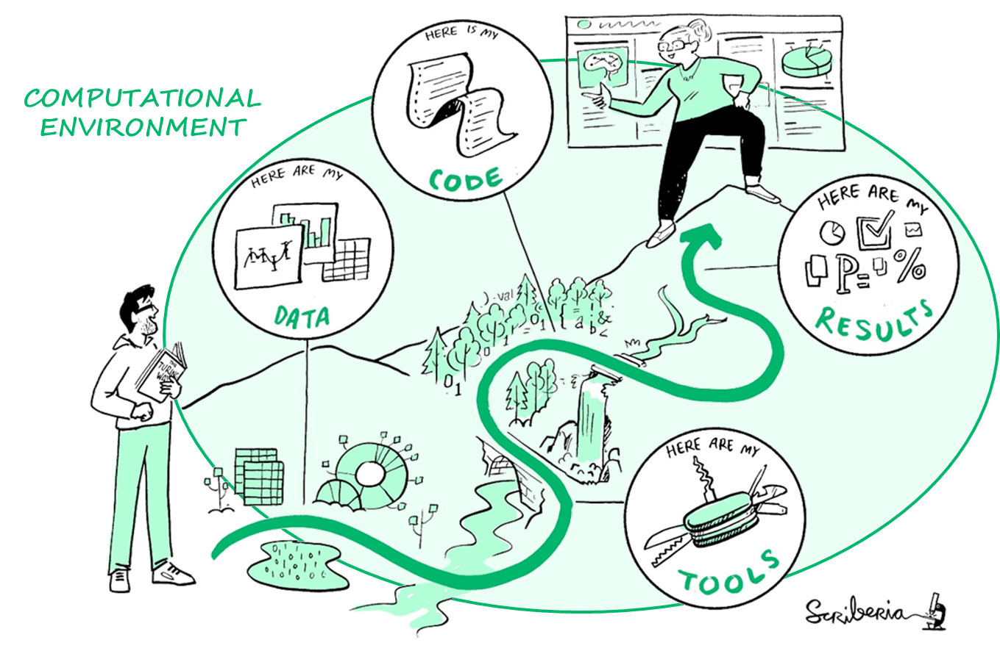

2 üìö Tools for reproducible quantitative research
2.1 Introduction
2.1.1 Overview
When reporting scientific results, researchers must document the steps they followed so that independent researchers within the broader research community are able to trust and build upon their findings (cumulative knowledge).
Reporting should include negative results as they contribute to the development of a cumulative knowledge as much as positive results do and avoid wasting resources.

There have been recurrent calls in the recent decades for the scientific community to embrace practices to support research reproducibility and many software tools are now available to facilitate this process.
2.1.2 Learning objectives
- What is meant by reproducible quantitative research and why does it matters?
- What should be documented for ensuring the reproducibility of quantitative analyses?
- What software tools are available to support reproducible quantitative research?
2.2 Reproducible quantitative research
A quantitative analysis is said to be (computationally) reproducible when the same analysis steps performed on the same dataset consistently produce the same quantitative results (1). Given the deterministic nature of computer programmes, a quantitative analysis must be reproducible to be credible.

In addition to (computational) reproducibility, replicability, robustness and generalisability are key to the generation of strong quantitative evidence.
The same analysis steps are performed on different datasets and produce qualitatively similar answers (1).

Different analysis steps are performed on the same dataset to answer the same research question and produce qualitatively similar or identical answers (1).

Different analysis steps are performed on the different datasets to know how well the work applies to all the different aspects of the research question and produce generalisable answers (1).

2.3 Good documentation for reproducible analyses
To guarantee that any other researcher can reproduce your analysis, you would need to document and share the full computational environment, tools, data and code that were used to generate your results.

2.4 Opportunities and challenges of reproducible research
- How do you think reproducible quantitative analyses can improve your research?
- Recent investigations have shown that a significant percentage of scientific studies cannot be reproduced, thus contributing to growing mistrust in scientific results (2,3). What barriers and challenges to reproducible research do you see in your daily practice?
üïí 5 minutes

In practice, reproducibility is challenging, even for trained data scientists equipped with an arsenal of software tools. Quantitative analyses can often not be fully reproduced because of complexities in how software tools are packaged, installed, and executed and because of limitations associated with how scientists document analysis steps.
2.5 Software tools across the research data lifecycle
As illustrated in Figure 2.7, there is now a whole set of free or open source software tools that are available to help you automate your processes and overcome reproducibility challenges across the research data lifecycle.
In this workshop, you will be introduced to following software tools that will help make your quantitative data processing, study and analysis more reproducible:
- Git/GitHub allow you to keep track of various versions of your code, share your code and collaborate with others on code development;
- R is a programming language for statistical computing and graphics and one of main programming language used for data science (with other programming languages such as Python and Julia). The ecosystem around R provides an interactive environment for data science science workflows, thus making R is a great start for your data science journey.
- Rstudio is an integrated development environment (IDE) for R that enables an easier use of R.
- Quarto allow you to generate (reproducible) dynamic reports to document your data analyses. We will use Quarto within the R/RStudio environment.
In practice, most data scientists use a mix of languages, often at least R and Python. You will be slightly exposed to R, but the goal of this workshop is

Although qualitative research contributes as significantly as quantitative research to knowledge generation, the validation of qualitative research findings is a much more complex and debated concept as qualitative analysis is by essence subjective and contextual. This explains the lower availability of software tools dedicated to qualitative research compared to what is available for quantitative research.